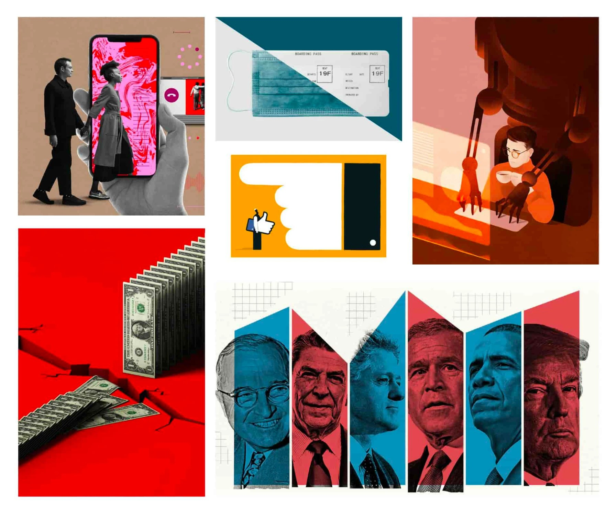
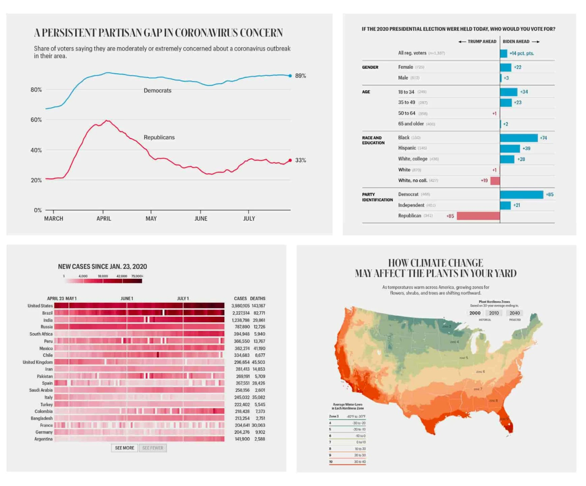

Forbes Vietnam
Designing a space where stories feel as powerful as the brand behind them.
01 — Thách thức01 — ChallengeUy tín toàn cầu, tiếng nói địa phươngGlobal authority, local voice
Forbes Vietnam là ấn bản nhượng quyền của Forbes (Mỹ) tại thị trường Việt Nam, chuyên về kinh doanh, hướng tới độc giả trung — cao cấp.
Mình chuyển hoá sự uy tín của thương hiệu Forbes thành trải nghiệm editorial số phù hợp với độc giả Việt — cân bằng giữa đẳng cấp quốc tế và sự gần gũi địa phương, nơi nội dung dẫn dắt và thiết kế khuếch đại.
Hệ thống layout lấy typography làm trung tâm giúp nội dung editorial phức tạp trở nên rõ ràng, người đọc dễ dàng điều hướng trong khi thương hiệu vẫn giữ được sự đáng tin cậy vốn có.
Forbes Vietnam is a franchise publication of Forbes (US) in the Vietnamese market, specialising in business and focusing on middle and high-end readers.
I translated the global authority of the Forbes brand into a digital editorial experience that resonates with a Vietnamese audience. By balancing international prestige with local relevance, I shaped a website where content leads and design amplifies.
I developed a typography-driven layout system that brings clarity to complex editorial content — ensuring readers navigate with ease while the brand speaks with the credibility Forbes is known for worldwide.
02 — Typography02 — TypographyBốn họ font, một bản sắcFour families, one identity
Brand guideline của Forbes giới hạn chặt chẽ ở 4 họ font cùng các font tương đương cho web và hệ thống, để mọi điểm chạm giữ một bản sắc thống nhất. Trên website, Merriweather, Work Sans và Georgia (Google Fonts) thay thế cho các font tuỳ chỉnh.
The Forbes brand guideline sticks strictly to four font families plus web and system equivalents, so every touchpoint keeps one identity. On the website, Merriweather, Work Sans and Georgia (Google Fonts) stand in for the custom fonts.
Hệ thống cho tiêu đề đẹp, khác biệt. Light · Demi · Bold; các độ rộng có thể trộn tự do, kể cả trong một từ.A system for distinctive headlines. Light · Demi · Bold; widths can be mixed freely, even within one word.
Dựa trên hình học, thiết kế để thực dụng. 5 độ đậm từ Light đến Bold; bản Circular B và Flex dùng trong tạp chí ở 9/11px.Geometric and built to be functional. Five weights, Light to Bold; Circular B and Flex are used in the magazine at 9/11px.
Đơn giản, nhiều độ rộng: vừa làm điểm nhấn vừa làm vai phụ. Font quan trọng cho digital và data visualization.Simple with many widths — a hero or a supporting act. Key for digital work and data visualisation.
Dễ đọc ở cỡ nhỏ, dùng cho body copy trên ấn phẩm in. Không dùng online.Legible at small sizes for print body copy. Not used online.
Simplicity
Hạn chế số độ đậm và cỡ chữ để giảm nhiễu thị giác.Limit weights and sizes to reduce visual noise.
Contrast
Dùng tương phản cỡ, độ đậm và màu để thể hiện phân cấp.Use contrasting size, weight and colour to express hierarchy.
Balance
Cân bằng giữa khối chữ và khoảng trống để người đọc thấy thoải mái.Balance blocks of type with open space so reading feels easy.
Color
Dùng màu chọn lọc để nhấn phân cấp; tăng nhẹ cỡ chữ trắng trên nền tối.Use colour selectively for hierarchy; size up white type on dark backgrounds.
Font tuỳ chỉnh được minh hoạ bằng font tương đương trên web.Custom fonts are previewed with their web equivalents.
03 — Color03 — ColorĐen, trắng và một điểm đỏBlack, white and a touch of red
Đen và trắng tối ưu cho khả năng đọc: đen dứt khoát, quyền lực; trắng tạo khoảng nghỉ cho người đọc. Đỏ chỉ dùng làm điểm nhấn — tượng trưng cho sức mạnh và cường độ — để ảnh và minh hoạ mang màu sắc vào thiết kế.
Online dùng các sắc xám thay cho đen/trắng thuần để dễ đọc hơn, mỗi chuyên mục có một cặp màu đậm/nhạt riêng. Các sub-brand như Under 30 hay ForbesWomen có bảng màu riêng nhưng vẫn neo vào bản sắc Forbes.
Black and white are optimal for legibility: black is definitive and authoritative; white gives readers room to pause. Red is used only as an accent — signalling strength and intensity — so photography and illustration bring the colour.
Online uses shades of grey instead of pure black and white for legibility, and each channel has its own dark/light pair. Sub-brands such as Under 30 and ForbesWomen have their own palettes while staying anchored to Forbes.
RGB 0 · 0 · 0
RGB 255 · 255 · 255
RGB 255 · 0 · 0
04 — Illustration04 — IllustrationMinh hoạ song hành cùng câu chữIllustration that works with the prose
Minh hoạ của Forbes đi cùng nội dung bài viết, làm sâu thêm câu chuyện bằng ẩn dụ thị giác táo bạo và ý tưởng sắc sảo.
Forbes illustration works hand in hand with the writing, deepening the story through bold visual metaphors and incisive concepts.
Chân dung gợi cảm xúcPortraits that evoke emotion
Đơn sắc hay màu mạnh, mỗi nét vẽ đều để truyền tải thông tin và tạo sự thích thú.
Monochrome or bold colour, every stroke is there to inform and delight.
Minh hoạ ý niệmConceptual illustration
Tươi mới, gợi suy nghĩ — phản ánh trí tuệ và thái độ của người viết; là những “bài luận bằng hình”.
Fresh and thought-provoking — reflecting the writers’ intelligence and attitude; visual think pieces.

05 — Data visualization05 — Data visualizationDữ liệu để kể chuyệnData that tells stories
Forbes sở hữu nguồn dữ liệu độc quyền tích luỹ hàng chục năm — data visualization là phương tiện để kể những câu chuyện thuyết phục từ đó.
- Mọi quyết định thiết kế phải có mục đích và phục vụ sự rõ ràng; giữ bảng màu đơn giản.
- Dữ liệu hiển thị một cách khoa học để quan hệ không gian và tỉ lệ có nghĩa.
- Tiêu đề biểu đồ dùng Schnyder; số liệu và nhãn dùng Graphik Compact.
- Không phải bộ dữ liệu lớn nào cũng cần tương tác.
Forbes owns proprietary data stretching back decades — data visualisation is the vehicle for turning it into compelling stories.
- Every design decision must be purposeful and serve clarity; keep colour palettes simple.
- Display data scientifically so spatial relationships and proportions make sense.
- Chart headlines use Schnyder; metrics and labels use Graphik Compact.
- Not every large dataset needs to be interactive.
Factoid & biểu đồ đơn giảnFactoids & simple charts
Một con số, một bar chart hay callout “By the numbers” — đọc nhanh, dễ hiểu.
A single figure, a bar chart or a “By the numbers” callout — quick and digestible.
Đồ hoạ tuỳ chỉnhCustom graphics
Đồ hoạ thiết kế riêng, có thể có chuyển động và mức độ chăm chút cao.
Bespoke graphics, including animated visualisations and high-touch executions.
Infographic chủ đạoLead infographic
Infographic là phương tiện chính của câu chuyện — cần thiết kế, nghiên cứu ảnh và phát triển riêng.
The infographic is the story’s main vehicle — requiring custom design, photo research and development.
Tương tácInteractives
Làm thông tin phức tạp dễ hiểu hơn qua việc hé lộ có chủ đích và cho người đọc tự khám phá.
Make complex information digestible through calculated reveals and letting readers explore.

06 — Digital06 — DigitalForbes.com và hệ templateForbes.com and its templates
Forbes.com mang đến trải nghiệm phong phú, sâu hơn cho cả độc giả lẫn đối tác — trung bình khoảng 140 triệu người dùng mỗi tháng trên mọi nền tảng, thu hút nhóm Millennial, Gen Z và Gen X.
Nội dung được tổ chức bằng một hệ template riêng cho từng loại bài — đây cũng là nền tảng khi mình thiết kế website Forbes Vietnam: giữ đúng ngôn ngữ thương hiệu toàn cầu, đồng thời điều chỉnh cho độc giả Việt.
Forbes.com offers a richer, deeper experience for readers and marketing partners alike — around 140 million monthly unique visitors across every platform, reaching Millennial, Gen Z and Gen X audiences.
Content is organised through a template system, one per story type — the same foundation I worked from when designing Forbes Vietnam: staying true to the global brand language while adapting for Vietnamese readers.
HomepageHomepage
Trang chủ tin tức và phân tích kinh doanh, dành cho lãnh đạo cấp cao: tin thời gian thực, bình luận sắc bén.The home of business news and analysis for senior executives: real-time reporting and sharp commentary.
Breaking newsBreaking news
Tin mới nhất, tiêu đề, phân tích, ảnh và video — có khối Key facts tóm tắt nhanh.Latest news, headlines, analysis, photos and video — with a quick Key facts summary.
ContributorContributor
Mạng lưới cộng tác viên đưa hàng trăm tiếng nói chuyên gia đến độc giả.The contributor network brings hundreds of expert voices to readers.
MastheadMasthead
Template riêng cho phóng viên nội bộ, trải nghiệm đọc cao cấp hơn.A staff-only template with an elevated reading experience.
Daily cover storyDaily cover story
Bài dài, điều tra chuyên sâu mỗi ngày, kèm ảnh và minh hoạ riêng.Daily long-form, investigative stories with custom photography and illustration.
ListsLists
Bảng xếp hạng có tìm kiếm theo tên, ngành; ghi rõ vị trí trả phí.Rankings searchable by name and industry, with paid placements clearly marked.
Tentpole listsTentpole lists
Danh sách chủ lực như Forbes 400 — bức tranh về tham vọng và đổi mới.Flagship lists like the Forbes 400 — a snapshot of ambition and disruption.